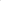
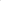
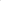
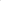
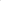

帮助文档
NOVAI v1.0.89 — 无限画布 AI 创作平台
如何开始使用 NOVAI
NOVAI 是一款面向创作者的无限画布 AI 创作平台。你可以在无限画布上自由缩放、拖拽、连线，组合各种 AI 能力——文生图、图生图、AI 视频生成、GPT 多模态对话——所有操作在一个界面中无缝衔接。
三步上手
- 下载安装：根据你的操作系统下载对应安装包，双击安装启动。
- 配置 API：首次启动后进入「API 设置」页面。内置 ModelScope 免费 API 可直接使用，也可添加自己的 API Key。
- 开始创作：打开「无限画布」，拖入节点、输入提示词即可生成图片或视频。
安装与运行
推荐：下载安装包
无需安装 Python、无需配置环境，下载安装包双击即用。
Windows：下载 NOVAI-Setup.exe，双击安装，桌面自动创建快捷方式。
macOS：下载 NOVAI.dmg，拖入 Applications 文件夹即可。首次启动若提示"无法验证开发者"，请前往 系统设置 → 隐私与安全性 中点击"仍要打开"。
从源码运行
如需从源码运行或参与开发：
git clone https://github.com/invaders-2/NOVAI.git
cd NOVAI
pip install -r requirements.txt
python main.py产品概览
启动 NOVAI 后，你会看到如下主界面：

图 1：NOVAI 主界面，包含无限画布、节点面板和工具栏。
NOVAI 的核心区域包括：
- 无限画布：中央最大区域，支持缩放（Ctrl+滚轮）、平移（空格+拖拽），画布大小无限制。
- 节点面板：左侧面板，列出所有可用的 AI 节点，包括图像生成、视频生成、GPT 对话、工具处理等类别。
- 工具栏：顶部工具栏，包含画布控制（缩放、适应画布）、节点搜索、设置入口和导出功能。
- 状态栏：底部显示当前 API 连接状态、队列中的任务数量和 GPU 使用情况。
功能介绍
核心能力
| 功能 | 说明 |
|---|---|
| 文生图 | 通过提示词生成高质量图像，支持 SDXL、Flux、Midjourney 风格 |
| 图生图 | 上传参考图进行风格迁移、变体生成、局部重绘 |
| 图生视频 | 静态图生成动态视频，支持运镜控制和帧率设置 |
| 文生视频 | 通过文字描述直接生成短视频片段 |
| GPT 多模态对话 | 支持文本、图片输入的多模态对话能力，可串联到工作流节点 |
| 工作流自动化 | 拖拽节点连线，构建自动化 AI 创作流水线 |
| 批量处理 | 一键批量生成，支持参数模板 |
| 历史记录 | 自动保存生成历史，支持回看和再编辑 |
创建画布
点击左侧面板的「新建画布」按钮，或使用快捷键 Ctrl+N（macOS: Cmd+N）创建新的无限画布。

图 2：在无限画布上拖入节点并连线构建工作流。
画布操作
- 缩放：Ctrl + 滚轮（macOS: Cmd + 滚轮），缩放范围 10%~800%
- 平移：空格键 + 鼠标拖拽，或鼠标中键拖拽
- 适应画布：双击空白区域，自动将所有节点适配到当前视口
- 框选：按住 Shift 拖拽可框选多个节点批量移动
- 右键菜单：画布空白处右键可快速添加节点、粘贴或调整画布设置
创建节点
节点是 NOVAI 工作流的最小执行单元。每个节点代表一个 AI 能力或处理步骤。
添加节点
- 从左侧节点面板拖拽任意节点到画布上
- 或双击画布空白区域，在弹出的搜索框中输入节点名称快速添加
节点类型
| 类别 | 节点 | 说明 |
|---|---|---|
| 图像生成 | SDXL / Flux / DALL-E | 文生图和图生图模型 |
| 视频生成 | Stable Video / Runway Gen | 图生视频和文生视频 |
| 语言模型 | GPT-4o / Claude / Gemini | 多模态对话和文本生成 |
| 图像处理 | Upscale / RemoveBG / Inpaint | 图像后处理和编辑 |
| 输入/输出 | Text Input / Image Load / File Save | 数据输入和结果保存 |
| 逻辑控制 | If / Loop / Batch | 条件判断和循环控制 |
连线规则
节点左侧为输入端口，右侧为输出端口。从输出端口拖拽到另一个节点的输入端口即可建立连接。数据类型不匹配时连线会显示为红色虚线，运行时自动跳过该连接。
生成图片
NOVAI 支持多种图片生成模式，通过不同的节点组合实现灵活的图像创作流程。
文生图
- 从左侧面板拖入「Text Input」节点，输入提示词
- 拖入「SDXL」或「Flux」节点
- 从 Text Input 的输出端连线到模型节点的输入端
- 右键点击模型节点选择「运行此节点」，或按
Ctrl+Enter运行整个工作流

图 3：文生图工作流示例，提示词 → SDXL → 图片输出。
提示词技巧
- 正面提示词：描述你想要的画面内容、风格、构图
- 负面提示词：描述不想要出现的元素，如 "blurry, low quality, watermark"
- 权重控制：使用
(keyword:1.2)语法增强某个关键词的权重 - 风格参考：在提示词中指定艺术风格，如 "oil painting"、"anime style"、"photorealistic"
生成视频
视频生成需要先有一张参考图（可从前置节点传入），或直接使用文本描述生成。
图生视频步骤
- 确保画布上已有一个图像输出节点（如 SDXL 生成的图片）
- 拖入「Stable Video」节点
- 将图像节点的输出端连线到视频节点的输入端
- 在视频节点参数面板中设置：帧数（默认 25 帧）、运动强度（1-10）、帧率（默认 24fps）
- 运行节点，生成的 MP4 会自动保存到输出目录
GPT 聊天
NOVAI 内置 GPT 多模态对话节点，支持文本输入和图片输入，可用于创意构思、提示词优化、代码生成等场景。

图 4：GPT 对话节点支持多轮对话和图片输入。
使用方式
- 拖入「GPT Chat」节点到画布
- 双击节点打开对话面板，直接输入消息并发送
- 支持上传图片作为对话上下文（点击输入框左侧的图片图标）
- 对话历史保存在节点内部，可导出为 Markdown 或 JSON
在工作流中使用
GPT Chat 节点支持与其他节点连线：
- 输入：可接收 Text Input 节点的文本，作为对话的系统提示或用户消息
- 输出：对话结果可传递给下游节点，如将 GPT 生成的提示词直接输入到 SDXL 节点
AI 协议配置
NOVAI 支持 8 种 AI 服务协议，覆盖国内外主流 AI 平台。你可以在「设置 → API 配置」页面管理所有 API Key。

图 5：API 配置页面，支持多种协议接入。
支持的协议
| 协议 | 代表平台 | 适用模型 |
|---|---|---|
| OpenAI Compatible | OpenAI / 智谱 / DeepSeek | GPT-4o, GPT-4, GLM |
| Anthropic | Claude | Claude 3.5 Sonnet, Opus |
| Gemini | Google AI | Gemini 2.0 Flash, Pro |
| ModelScope | 阿里 ModelScope | SDXL, Qwen |
| Volcano Engine | 火山引擎 | Doubao, Seedream |
| Replicate | Replicate.com | Flux, SDXL |
| ComfyUI | 本地 ComfyUI | 自定义工作流 |
| Custom HTTP | 自建服务 | 任意兼容 OpenAI API 的服务 |
内置免费 API
NOVAI 内置了 ModelScope 的免费 API，无需任何配置即可使用基础的文生图和 GPT 对话功能。免费 API 有以下限制：
- 图像生成：每天 100 次免费调用
- GPT 对话：每分钟最多 10 次请求
- 不支持视频生成和高级模型
如需解除限制，请在设置中添加自己的 API Key。
内置模型列表
以下是 NOVAI 当前版本预设的模型节点清单，随版本更新会持续扩充：
| 节点名称 | 类型 | 来源 |
|---|---|---|
| SDXL 1.0 | 图像生成 | ModelScope / Replicate |
| Flux.1 Dev | 图像生成 | Replicate |
| DALL-E 3 | 图像生成 | OpenAI |
| Stable Video | 视频生成 | Replicate |
| Runway Gen-3 | 视频生成 | Runway |
| GPT-4o | 多模态对话 | OpenAI / 智谱 / DeepSeek |
| Claude 3.5 Sonnet | 文本对话 | Anthropic |
| Gemini 2.0 Flash | 多模态对话 | Google AI |
| Upscale 4x | 图像处理 | 内置 |
| Remove Background | 图像处理 | 内置 |
| Inpaint | 图像处理 | 内置 |
常见问题
Q: 为什么我的图片生成失败了？
常见原因：① API Key 无效或余额不足；② 网络连接问题；③ 提示词触发了内容安全过滤。请检查 API 设置中的连接测试结果，并尝试更换提示词。
Q: macOS 提示"无法验证开发者"怎么办？
前往 系统设置 → 隐私与安全性，在底部找到 NOVAI 的拦截记录，点击「仍要打开」。只需操作一次，后续启动不再提示。
Q: 如何分享我的工作流？
右键点击画布空白区域，选择「导出工作流」即可保存为 .novai 文件。将此文件发送给其他人，对方通过「导入工作流」即可复现完全相同的节点和连线。
Q: 视频生成为什么这么慢？
视频生成是计算密集型任务，耗时取决于帧数、分辨率和模型复杂度。建议先以较低参数测试，确认效果后再提升。
Q: 支持离线使用吗？
部分功能支持离线。如果你在本地部署了 ComfyUI 或 Ollama，可通过 Custom HTTP 协议连接到本地服务，实现完全离线运行。内置的图像处理节点（Upscale、RemoveBG）也可离线使用。
Q: 数据会传到云端吗？
不会。NOVAI 是纯本地桌面应用，你的提示词、图片和工作流数据仅存储在你的电脑上。只有当调用云端 API（如 OpenAI、ModelScope）时，对应的请求数据才会发送到对应平台。
更新日志
v1.0.89 (2025-07-20)
- 新增：ComfyUI 协议支持，可直接连接本地 ComfyUI 工作流
- 新增：节点搜索功能，双击画布快速查找和添加节点
- 优化：画布渲染性能提升 40%，200+ 节点流畅运行
- 修复：macOS 下部分快捷键冲突问题
- 修复：视频生成节点在某些网络环境下超时的问题
v1.0.88 (2025-07-13)
- 新增：批量处理模式，支持参数模板一键批量生成
- 新增：历史记录面板，可回看和重新编辑过往生成结果
- 优化：API 配置页面 UI 改版，支持一键测试连接
- 修复：Windows 下高分屏缩放显示异常
v1.0.87 (2025-07-06)
- 新增：Gemini 2.0 Flash 模型节点
- 新增：工作流导入/导出功能（.novai 格式）
- 优化：提示词输入框支持语法高亮和自动补全
- 修复：部分情况下节点连线断开后无法重连的问题
v1.0.86 (2025-06-29)
- 新增：Loop 和 Batch 逻辑控制节点
- 优化：首次启动引导流程
- 修复：图片输出节点中文路径兼容性问题
v1.0.85 及更早
初始版本发布，包含：无限画布、SDXL 图像生成、GPT 对话、基础节点系统、ModelScope 免费 API 内置。详见 GitHub Releases。